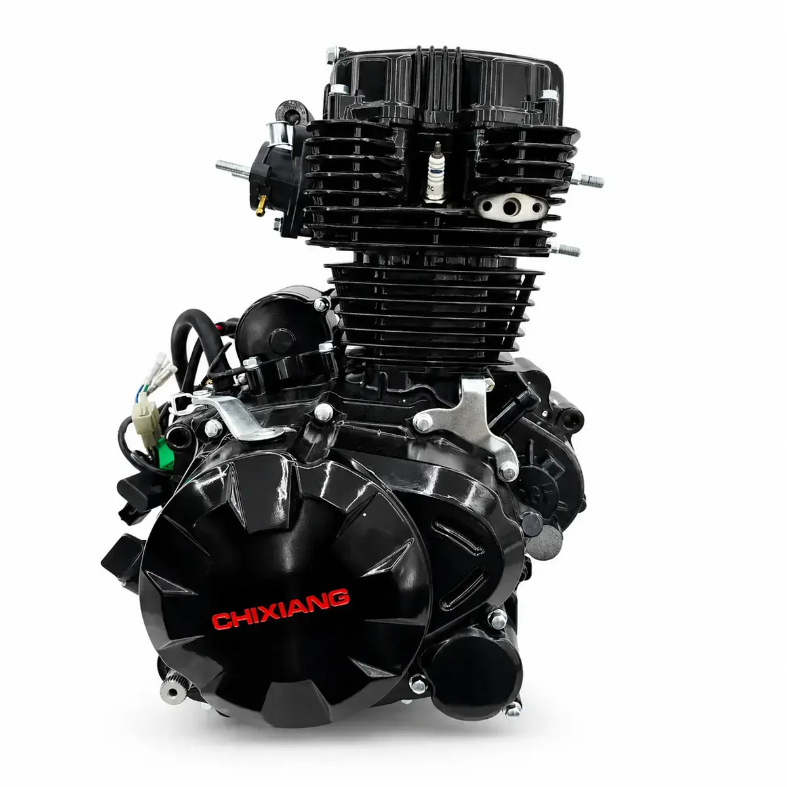
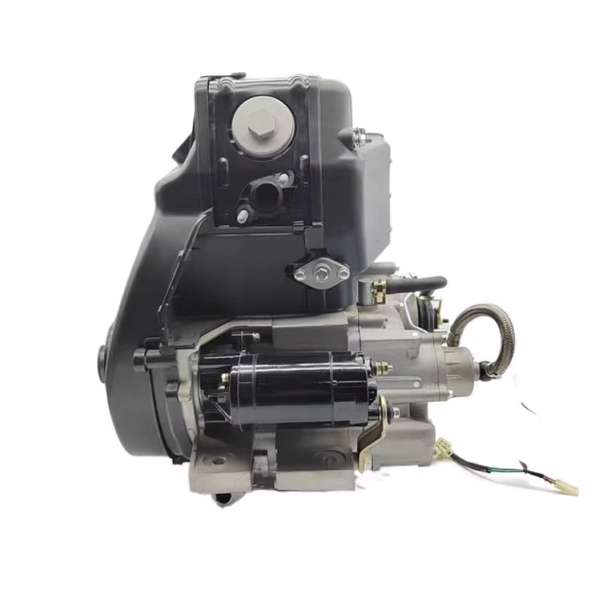

CG125–CG250 и Вода
Штанговые двигатели CG (воздух / вода)
CG125, CG150, CG200 (10 кВт / 13,5 Н·м), CG250 и водяные CG150SB–CG250SB для мотоциклов и лёгких трициклов.
Все серийные линейки выпускаются в Чунцине с отгрузкой от 50 моторов в смешанном контейнере FOB Гуанчжоу и 100 % стендовой обкаткой.
CG125, CG150, CG200 (10 кВт / 13,5 Н·м), CG250 и водяные CG150SB–CG250SB для мотоциклов и лёгких трициклов.

Тихая цепь ГРМ, высота 452 мм, 29–31 кг и отдача до 12 кВт на CB250 для эндуро и дорожных мотоциклов.

Точные кубатуры: 106,7 мл, 107 мл, 123,67 мл (код 130), 140 мл (YX140 ориентир) и 149,8 мл (CX1P60FMJ со встроенным маслоканалом ГБЦ), механика или полуавтомат.

Жидкостное охлаждение 75 × 65 мм, вариатор CVT L-H-N-R со встроенным задним ходом и 5-кулачковым сцеплением.

Двигатели в сборе, половинки картера, ГБЦ, поршневые группы (ЦПГ) и комплекты прокладок по OEM-геометрии.

Тяжёлая серия HW Water под грузовые трициклы: объём масла 1,5 л, с 20-роликовой обгонной муфтой, магнето повышенной мощности, карбюратор PZ30 и совместимость с внешними редукторами реверса.
12,5 кВт · 21 Н·м · Картер 1,5 л · 20 роликов · под реверс-редуктор.


10 кВт при 7 500 об/мин · 13,5 Н·м при 6 500 об/мин · с баланс-валом или без.

Принудительное воздушное охлаждение и встроенный реверс 4F+1R.
Комбинируйте штанговые CG, цепные CB OHC, горизонтальные моторы Альфа/Дельта/питбайк, водяные HW300 и аналоги Bajaj & TVS на условиях FOB Гуанчжоу.